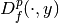
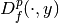
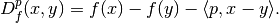

arcsin_func.bregman¶
-
arcsin_func.bregman(point, subgrad)¶ Return the Bregman distance functional.
Parameters: - point : element of
functional.domain Point from which to define the Bregman distance.
- subgrad : element of
functional.domain A subgradient of
functionalinpoint. If it exists, a valid option isfunctional.gradient(point).
Returns: - out :
BregmanDistance The Bregman distance functional.
Notes
Given a functional
 , a point
, a point  , and a (sub)gradient
, the Bregman distance functional
 in a point
, and a (sub)gradient
, the Bregman distance functional
 in a point  is given by
is given by
For mathematical details, see [Bur2016]. See also the Wikipedia article: https://en.wikipedia.org/wiki/Bregman_divergence
References
[Bur2016] Burger, M. Bregman Distances in Inverse Problems and Partial Differential Equation. In: Advances in Mathematical Modeling, Optimization and Optimal Control, 2016. p. 3-33.
- point : element of